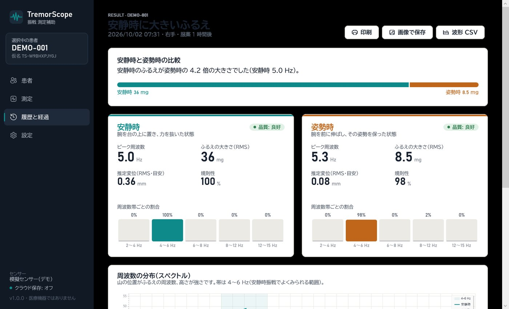
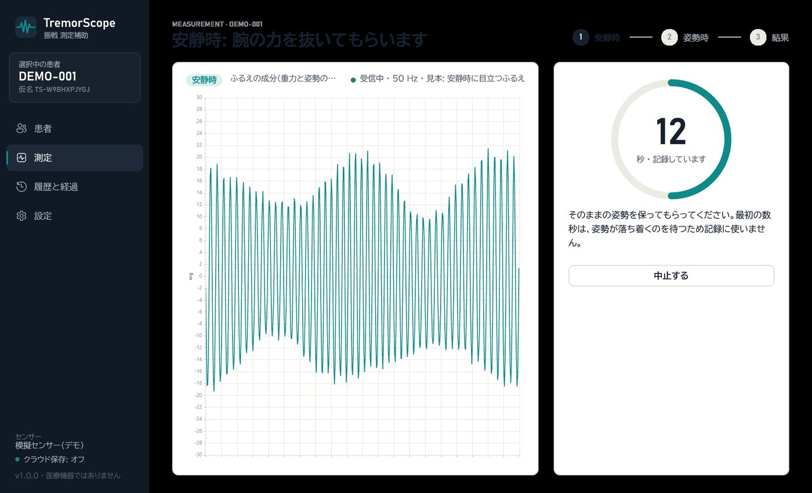
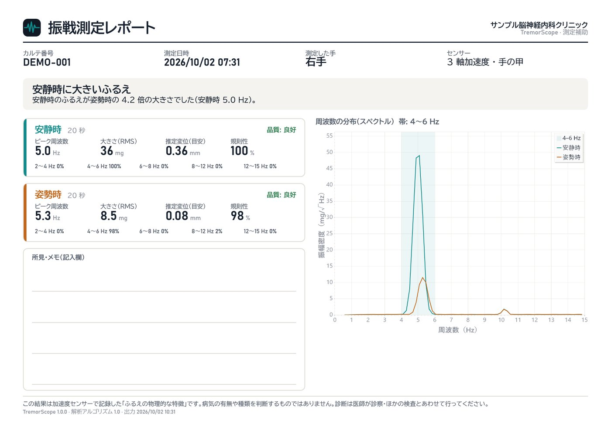

TremorScope
手の甲に付けた3軸加速度センサーで、安静時と姿勢時のふるえを20秒ずつ記録。周波数・大きさ・規則性を数値にして2つの条件を比べる、医療機関での測定の補助を想定したWindowsソフトです。



画面はすべて見本のデータ(DEMO-001・模擬センサー)です。
なぜ作ったか
パーキンソン病では安静時に4〜6Hzのふるえが出やすく、本態性振戦では腕を伸ばしたとき(姿勢時)に目立つことが多い、という特徴があります。診察ではこの違いを目で見て判断しますが、「どのくらいの速さ・大きさか」「前回と比べてどうか」を数値で残すのは難しいのが現状です。
TremorScopeは、手順を決めた2回の測定と、診察の記録に貼れるレポートで、この部分を補うことを目指しました。
| プラットフォーム | Windows デスクトップ(WPF / .NET 10)、センサーは ESP32 + MPU6050 |
| 開発形態 | 個人開発 |
| 主な技術 | C#, MVVM, Entity Framework Core(SQLite), Azure IoT Hub, Azure Cosmos DB, fo-dicom(DICOM / PACS), xUnit, GitHub Actions, Arduino(ESP32) |
| ライセンス | MIT License |
試してみる
ブラウザー版 haru-ki417.github.io/TremorScope/ — 専用センサーの代わりに、スマホ・タブレット本体の加速度センサーで安静時と姿勢時を測れます。解析はWindows版と同じ計算の部品をWebAssemblyで動かし、記録はその端末だけに保存します。
- 最新のリリースから
TremorScope-1.0.0-win-x64.zipをダウンロードして展開します(.NETのインストールは不要です)。 TremorScope.exeを起動します。署名をしていないため警告が出た場合は「詳細情報」→「実行」を選びます。- 初期設定は模擬センサーです。患者「DEMO-001」を登録して「測定を始める」を押すと、センサーがなくても測定から結果・レポートまで試せます。
2段階の測定と、その場での品質確認
安静時(腕を台の上に置き、力を抜いた状態)と姿勢時(腕を前に伸ばし、その姿勢を保った状態)を、画面の案内どおりに20秒ずつ測ります。はじめの3秒は姿勢が落ち着くまで待つため記録に使いません。
測った直後に、次のような問題がないかを自動で確かめ、あればその場で取り直せます。
- センサーが動いていない(装着できていない)
- 通信の欠け、記録時間の不足
- 値の振り切れ(センサーの測定範囲を超えた)
- 腕の大きな動き(ふるえ以外の動作の混入)
解析の手順
- 3軸それぞれから、重力と姿勢のゆっくりした変化を除く(1Hzの高域通過フィルター。位相がずれないよう前後2回かける)
- Welch法でスペクトルを求め(約5秒・ハン窓・50%重ね)、3軸を足し合わせる。これによりセンサーの向きによらない
- 2〜15Hzで最も強い周波数を、放物線の補間で求める
- 帯域の強さからRMS(mg)、
a / (2πf)²で推定変位(mm)、ピーク±1Hzへの集中度から規則性を求める
結果の伝え方
安静時と姿勢時のどちらが大きいかは、「安静時のふるえが姿勢時の4.2倍の大きさでした」のように、評価を含まない事実だけの文章で示します(比べる基準は設定で変えられます)。
- 患者ごとの推移のグラフと一覧、CSVでの書き出し
- A4横のレポートを印刷・PNG保存
- レポートをDICOM(Secondary Capture)にして、C-STOREでPACSへ送信
個人情報の扱い
- カルテ番号はこのPCの外に出さない。クラウドに送るのは、カルテ番号から施設ごとの鍵で作った仮名ID(HMAC-SHA256)と測定値だけ
- 接続文字列・キー・施設の鍵は、WindowsのDPAPIで暗号化して保存
- クラウドへ送れなかった分は自動で再送
- 患者を削除すると、このPCとクラウドの両方から消える
センサーとクラウド
ESP32とMPU6050で作ったセンサーが、50Hz・3軸の加速度を0.5秒ごとにまとめてMQTT(TLS)でAzure IoT Hubへ送ります。院内のPCで動くTremorScopeがIoT Hubから受け取り、波形とカルテ番号は手元のSQLiteに、仮名IDと測定値だけをCosmos DBに保存します。
品質と配布
- xUnitで58件のテスト。正解の分かる信号で解析を検証し、保存処理や個人情報の扱いも確認
- 警告はすべてエラー扱い(TreatWarningsAsErrors)、.NETのコード解析は latest-recommended
- GitHub Actionsでプッシュのたびに、Windowsでビルド・テスト・データベースのマイグレーションを確認
- リリースを公開すると、配布用のzipを自動で作って添付
- 見本のデータで全画面を画像に保存する
--snapshotsオプションで、READMEの画面画像も自動で作成
制限と今後
解析の数値は、加速度計を使った振戦研究で一般的な手法に基づく目安です。既存の評価尺度や他の機器との比較による臨床的な妥当性の検証はしていません。また、診断や治療の判断に使う目的で提供する場合は、医薬品医療機器等法(プログラム医療機器)の手続きが必要になる可能性があることも明記しています。
今後は、両手の同時測定、動作時(指鼻試験)の条件の追加、測定手順の動画ガイドに取り組む予定です。